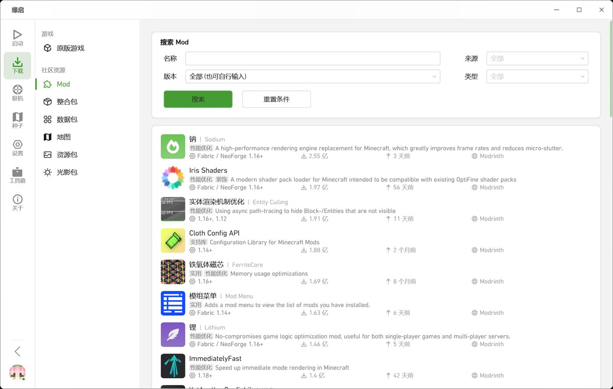
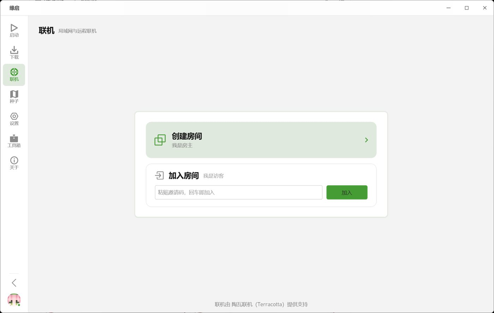
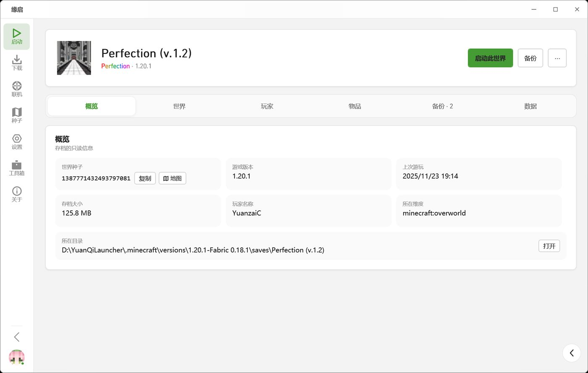
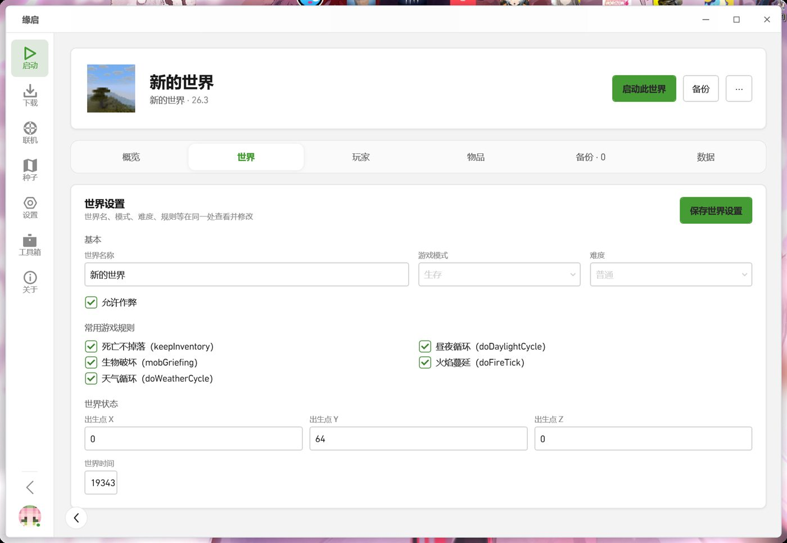
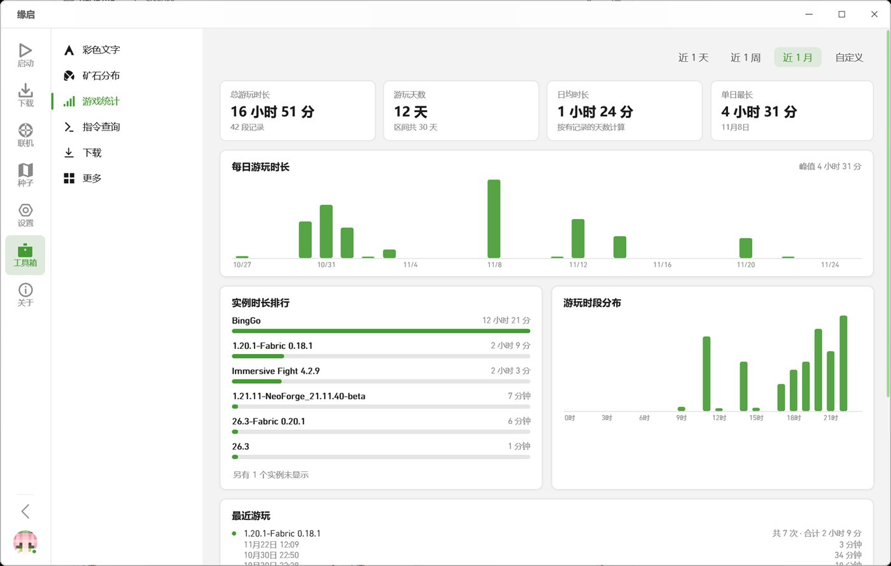

01日常
安装、游玩、维护
日常会用到的功能大致分这三类。要记路径、翻文件夹、手改配置文件的部分，启动器都替你做了。
- 安装与配置版本、加载器、Java、Mod
- 游玩与记录存档、种子地图、账号、联机
- 维护与更新崩溃排查、空间收纳、版本升级
安装与配置
版本、加载器、Java 写在同一处
原版与 Forge、NeoForge、Fabric、Quilt、LiteLoader、OptiFine 并列成清单，选完版本再分配内存，不用来回切页。
整合包缺什么，装的时候一起补
导入时会读出包要求的加载器与 Java 版本，缺的当场补上，不用装完再猜是哪一步漏了。
从其他启动器接手已有版本
PCL、HMCL、官方启动器里的版本、存档与资源都能识别并复制过来，也可以只挑几个需要的。
游玩与记录
存档信息读得出来，也能改
种子、游戏版本、占用大小、存档内玩家、最后游玩时间一并列出；规则、坐标、经验可直接修改，改动前自动备份。
种子地图内置
输入种子即可查看生物群系与结构分布，可缩放、切换维度，不必另外打开网页查。
账号放在同一个池子里
微软正版、外置登录与离线账号并存，切换只点一下，头像与皮肤各自缓存。
房间建好，地址发出去就能联机
内置 Terracotta，不用另外装服务端；对方用同样的启动器输入地址即可加入。
维护与更新
崩溃后指到具体位置
解析崩溃日志，指出问题出在加载器版本、某个 Mod 还是 Java 不匹配，并给出对应的处理建议。
不常玩的版本可以收起来
每个版本的磁盘占用单独列出；长期不用的能打包压缩，需要时一键还原。
启动器与联机组件分别更新
检查到新版本会写明改了什么，确认后自动下载安装；历次更新日志随时能在设置里翻看。
02界面
每个页面，
只做一件事
启动、下载、联机、种子、设置、工具箱、关于，左边一条导航走完。从别的页面切回来，还停在你上次看到的位置。









03联机
房间开在你自己的电脑上
不用公网 IP，也不用去路由器上开端口。房主建好房间拿到邀请码，朋友粘贴回车就进来了。
- 直连优先两边网络允许就走直连，不行才经中转，延迟写在房间里。
- 账号不限正版、离线、第三方登录都能进同一个房间。
- 卡住能查准备、模块、房间、就绪四段分别显示，失败会说清停在哪，可原地重试。

04种子地图
不进游戏，
先看看这个世界长什么样
把种子填进去就能看地形：主世界、下界、末地分开渲染，生物群系和结构想筛哪个筛哪个。 找到想去的地方，右键就能把坐标复制走，六种格式随你挑。 计算全在你自己的电脑上，种子不会传出去。
- 主世界 / 下界 / 末地
- 生物群系与结构筛选
- 3D 预览
- 坐标缓存
- 六种复制格式
05工具箱
五个小工具，
都在启动器里
彩色文字、矿石分布、游戏统计、指令查询、直链下载。全部在本地算，不上传任何内容。
彩色文字
打一句话，逐字渐变自己就出来了。聊天栏与 MotD 的效果同时给出来，复制走就能贴进游戏或服务器配置。
矿石分布
想知道钻石在哪个高度最好挖？拖动 Y 层，这一层会出什么矿、概率多高，按版本算好的结果直接列出来。
游戏统计
这个月玩了多少小时、哪几天玩得最凶、哪个版本占的时间最多，都算好了，最长能看四个月。
指令查询
记不住写法就按分类翻。候选项跟着你当前玩的版本走，常用指令带例子，点一下直接复制。
直链下载
浏览器里点下载老是跳网盘页面？把直链粘进来，文件名、目录自己定，下载会进任务列表，进度在右下角。
06个性化
想换就换：
颜色、背景、挂机画面
十四种主题色随手挑，也能自己调色相和饱和度。背景可以换成你喜欢的图片——本地文件夹里的、或者网上的都行， 透明度和模糊也能调。
界面能放大缩小，高分屏也不糊；用不到的页面可以藏起来，眼不见心不烦。设置还能导出带走。
存档2 个
游玩日历11 月
点一下，上面这个窗口和整页的配色一起换
 ESC 或点击任意处返回
ESC 或点击任意处返回
挂机时，变成一张风景画
不玩的时候点右上角，启动器会切成无边框全屏，画面取自你游戏里的全景图，左下角只剩时间和当前版本。没有按钮，点一下或按 ESC 就回来；挂着也不怎么吃资源。
07安装
安装与首次启动
安装包发布于 GitHub Releases，取最新版本即可。
-
1
获取安装包
下载
YuanQi-Setup.exe并运行。安装过程不依赖其他运行时，无需预先配置环境。 -
2
选择安装位置
程序文件、资源文件与联机模块安装在同一目录；配置与游戏数据同样保存在该目录下，不写入系统其他位置，便于日后完整移除。
-
3
首次启动
首次启动需指定游戏版本与分配内存，确认后即可启动。若本机已有
.minecraft目录，可在引导中直接指向该目录，其中版本、存档与资源会被识别，无需重新下载游戏文件。
系统要求：Windows 10 及以上。安装过程需要一次管理员权限，此后以普通权限运行。
后续升级使用同一安装包，仅替换程序文件，配置与游戏数据保留。卸载时可选择是否同时删除存档。
08问答
常见问题
缘启和 PCL 是什么关系？
缘启是基于龙腾猫跃（LTCat）开发的 Plain Craft Launcher 开源版本二次创作的，界面、联机接入和启动流程都做过重做。它不是 PCL 官方版本，和 PCL 官方没有关系；原作者的署名和赞助入口在「关于」页里。
一定要正版账号吗？
不一定。微软账户会走正版验证；也可以用外置登录（Authlib-Injector 服务器）或者离线账户玩单人世界和自建服务器。启动器会提醒支持正版，但不会强制。
会不会偷偷收集我的信息？
不会。缘启没有内置任何上报通道，登录凭据、设置和缓存都只存在你自己的文件夹里。唯一会写进系统的地方，是你主动勾选「使用高性能显卡」时写入的一条显卡偏好设置。
支持哪些加载器和资源站？
Forge、NeoForge、Fabric、LiteLoader、OptiFine 都支持（暂不支持 Quilt）。Mod 和整合包来自 Modrinth 与 CurseForge，原版游戏走官方源和国内镜像；装整合包时会按包里的清单把加载器补齐，装 Mod 前会检查前置依赖。
以前玩的 .minecraft 还能用吗？
能。在启动页点「添加文件夹」，指到你原来的 .minecraft 就行，里面的版本、存档、资源包会直接出现在列表里；整合包压缩包也能直接拖进来。游戏文件不用重下，只需要装一次启动器。
电脑要满足什么条件？
Windows 10 及以上即可。启动器本身基于 .NET Framework 4.8；内置浏览器和部分动画需要 WebView2 运行时；联机模块需要 VC++ 运行库。这几个组件缺了会直接提示你，不会让你自己去猜。